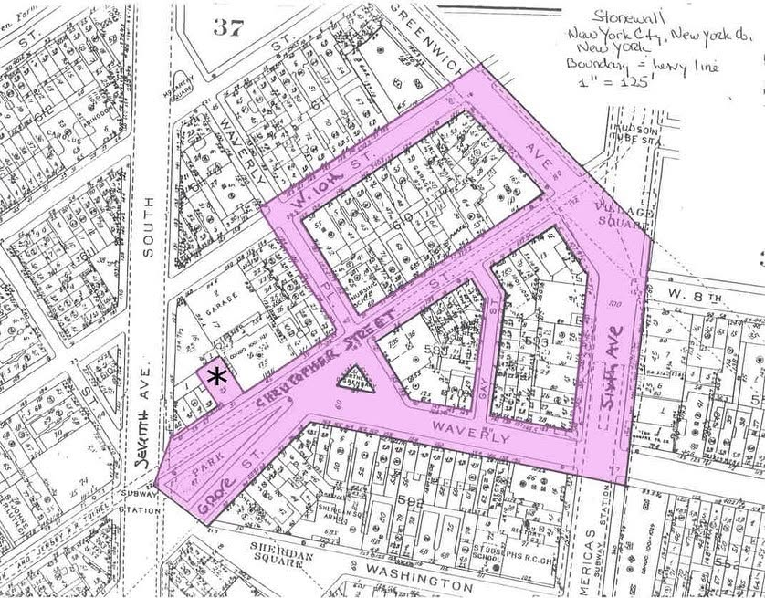

Stonewall Inn, New York, NY, 1969
Here I was, a “true local”, I could even tell you how to get to the Stonewall Inn:
If you’re taking the train, you’re wanting to take the 1 train and get off at the Christopher Street station.

Eventually, words in this text will be able to reveal threshold , images, notes, definitions, and other information.
SHIT! THEY’RE COMING IN- They’re yelling to shut down the music- The jukebox is unplugged, the DJ stops. There are so many of us tonight, 150 at least, this is crazy. The energy is scary. I hate this. It’s been so restless lately. So many people we know are barely handling these random nights in jail. Constantly being ID’d. Even my lady friends get thrown in the back of the cab for wearing pants and having short hair–
The crackling of the fire is intense. I can see it from where I stand. Around me people are screaming. Cheering. I wonder if this will continue. Photo here of the first gay pride parade.